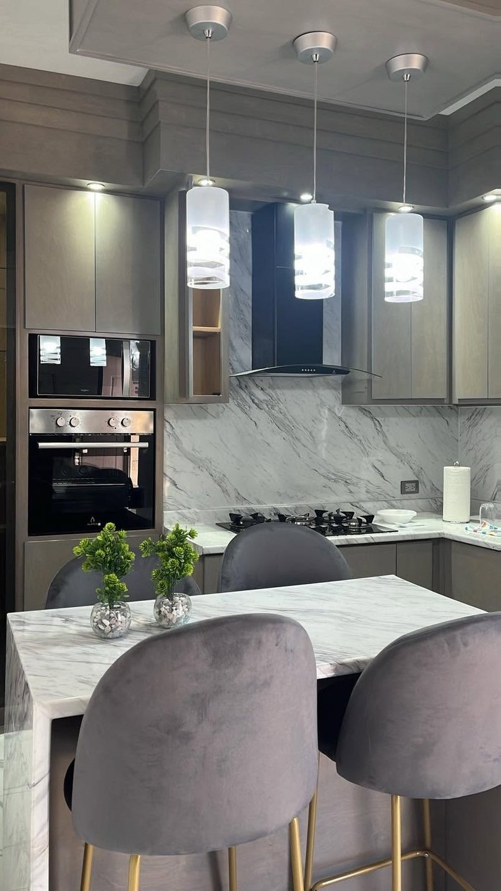
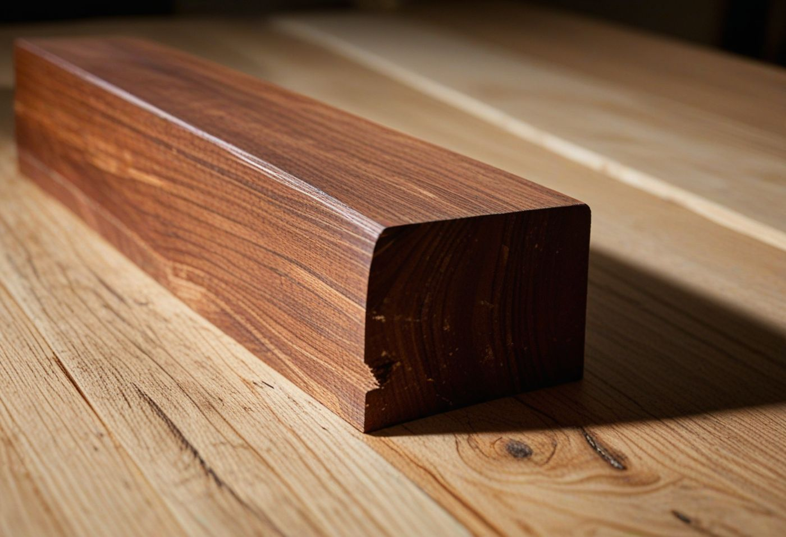
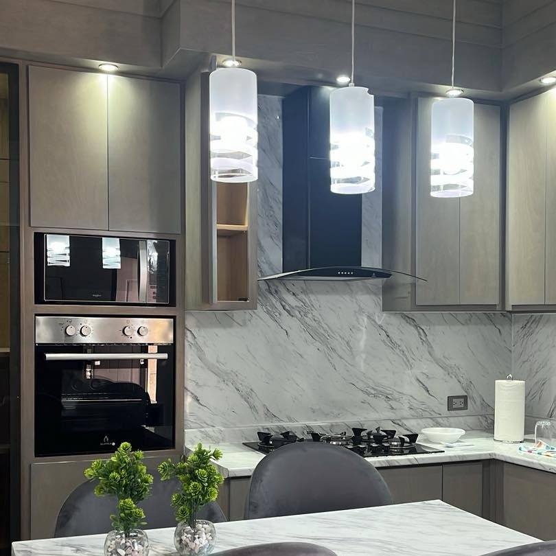
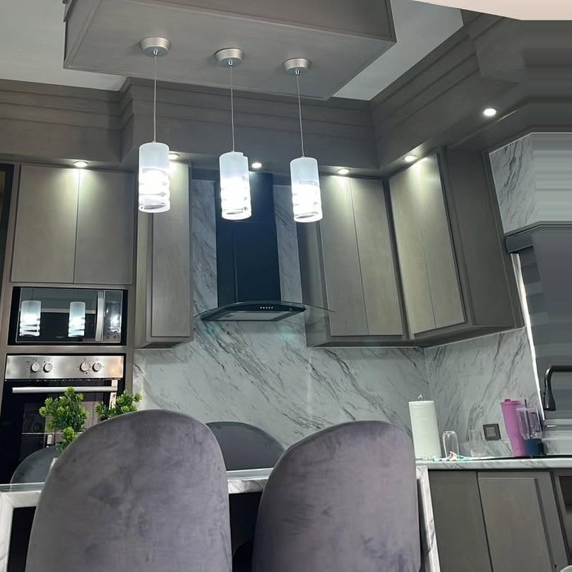
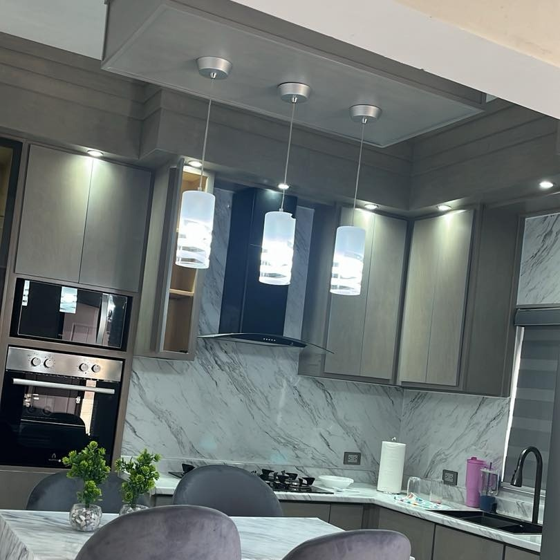

Cocinas integrales en madera 100% sólida, hechas a tu medida
Veinte años fabricando en Caborca. Trabajamos encino, tzalam, cedro, banak y pino, y entregamos instalado en cuatro a seis semanas. Nada de aglomerado.

Muebles para toda la vida, no para tres años
Entre el calor del desierto y la humedad de la costa, el aglomerado no aguanta. Se hincha desde adentro, las bisagras pierden agarre y no hay forma de repararlo. La madera sólida solo asienta su veta.
| Madera 100% sólida | Aglomerado o MDF | |
|---|---|---|
| Con la humedad | Trabaja y asienta la veta | Se hincha desde adentro |
| Bisagras y tornillos | Vuelven a apretar | Pierden agarre y ya no sujetan |
| A los diez años | Se lija, se sella y se barniza | Se cambia el mueble completo |
| Se puede reparar | Sí, la pieza dañada | No, el tablero no tiene arreglo |

Imagen de referencia del material. No es una cocina del taller.Antes de firmar, míralas por el canto
El día que las instalan, una cocina de aglomerado y una de madera sólida se ven igualitas. La diferencia está en el borde de la puerta: en el aglomerado hay una cinta pegada encima, y en la madera la veta cruza el canto y sigue de largo.
Te toma dos segundos revisarlo y no tienes que creerle a nadie.
De tu idea a tu cocina lista, en cuatro pasos
Con fecha por escrito desde el principio. El mismo taller que fabrica es el que va a medir y el que instala: no subcontratamos.
Nos escribes
Mándanos las medidas o una foto de tu espacio por WhatsApp.
Te cotizamos
Presupuesto estimado sin costo. Te decimos qué madera te conviene.
Vamos a medir
Tomamos las medidas exactas en tu casa y cerramos el diseño.
Fabricamos e instalamos
Cuatro a seis semanas, y la dejamos puesta y funcionando.
Escogemos la madera según tu clima y tu uso
Encino
Duro y de veta marcada. Para frentes que se abren todos los días.
Tzalam
Tropical, de tono oscuro y muy estable con los cambios de clima.
Cedro
Ligero y aromático. El clásico de la ebanistería mexicana.
Banak
Grano fino y parejo. Recibe muy bien el sellador y el barniz.
Pino
De primera, escogido pieza por pieza. La opción más accesible.
Desierto y costa piden maderas distintas
No es lo mismo una cocina en Caborca, con más de 45 grados y aire seco, que una en Puerto Peñasco o San Carlos, con humedad y salitre todo el año. El aire seco raja la madera mal escogida; la humedad de la costa hincha lo que no está bien sellado.
Por eso preguntamos primero dónde vas a instalar. Según la zona cambiamos la especie y reforzamos el sellado con sellador de alta penetración y barniz de poliuretano.
- Caborca y Sonoyta
- Calor seco. Especies estables y sellado parejo en cantos.
- Peñasco y San Carlos
- Humedad y salitre. Más atención al sellado y a los herrajes.
- Nogales
- Cambios fuertes de temperatura entre invierno y verano.
Cocina integral instalada en Caborca
Tres tomas de la misma obra. Para ver las entregas semana a semana, el Facebook del taller está siempre al día.



Taller establecido, no carpintero de ocasión
Dirección física
Los Opatas #488 en Caborca. Puedes venir a ver dónde se fabrica tu cocina.
Fecha por escrito
El plazo de cuatro a seis semanas queda acordado antes de empezar.
Instalamos nosotros
Los mismos carpinteros del taller. No se subcontrata a terceros.
Veinte años aquí
Más de 500 cocinas en el noroeste de Sonora desde 2004.
Caborca y toda la región
- Heroica Caborca
- Puerto Peñasco
- San Carlos
- Nogales
- Sonoyta
¿Estás en otra parte de Sonora? Pregúntanos, muchas veces se puede.
Lo que más nos preguntan
¿Cuánto cuesta una cocina integral de madera sólida?
Depende de los metros lineales, de la madera y de los herrajes, así que no manejamos precio de lista: cada cocina se calcula sobre el espacio real. Mándanos las medidas o una foto por WhatsApp y te damos un presupuesto estimado sin compromiso.
¿Cuánto tardan en entregar?
De cuatro a seis semanas desde que se cierra el proyecto, y eso ya incluye la instalación. La fecha queda acordada antes de empezar.
¿Cómo sé si es madera sólida o aglomerado?
Revisa el canto de la puerta. En el aglomerado hay una cinta pegada encima; en la madera sólida la veta cruza el canto y sigue por la cara. Es la prueba más rápida y la puedes hacer tú.
¿Se puede reparar años después?
Sí. La madera sólida se lija, se vuelve a sellar y se barniza, y queda como nueva. Un tablero de aglomerado hinchado no tiene arreglo: se cambia el mueble.
¿Instalan fuera de Caborca?
Sí, instalamos en Puerto Peñasco, San Carlos, Nogales y Sonoyta con personal del propio taller. Si estás en otra ciudad de Sonora, pregúntanos.
¿Trabajan con constructoras o solo con particulares?
Escríbenos y lo vemos. Cotizamos tanto casa por casa como proyectos de varias cocinas.
¿Ya tienes las medidas o una foto de la cocina que quieres?
Mándanos un mensaje. Te decimos qué madera te conviene y te damos un presupuesto estimado, sin compromiso.
Escribir al 637 125 4615- Taller
- Los Opatas #488, esquina Av. de los
Petroglifos
Heroica Caborca, Sonora · C.P. 83663 - Teléfono
- 637 125 4615
- Instalamos en
- Caborca · Puerto Peñasco · San Carlos · Nogales · Sonoyta
- Fabricación de Cocinas El Patrón